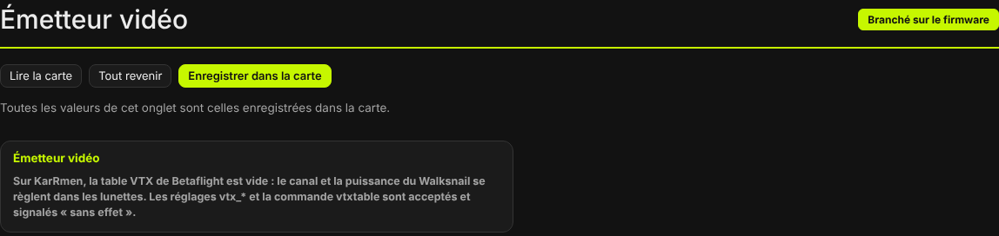
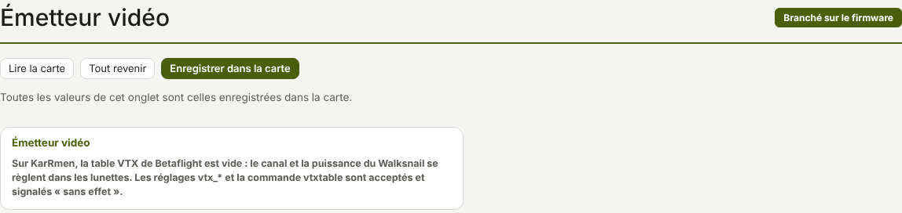

TRUEGLIDE
TRUEGLIDE Émetteur vidéo
L'onglet Émetteur vidéo (groupe Vidéo et lumières) n'a pas de réglage à changer sur KarRmen : son émetteur Walksnail se règle dans les lunettes. L'onglet le rappelle.


Walksnail : réglé dans les lunettes
Sur KarRmen, la table VTX de Betaflight est vide : le canal et la puissance de l'émetteur Walksnail se règlent dans les lunettes, pas par la carte de vol. XPro ne commande donc pas l'émetteur.
La carte parle quand même à l'émetteur par MSP sur l'UART1 (OSD et état du drone) : à l'essai B9 (firmware 0.8.3, 17/10/2026), les lunettes de KarRmen ont lancé l'enregistrement de la vidéo à l'armement. Avant l'armement, les lunettes peuvent afficher « Standby Mode, low rf power » : c'est un message des lunettes, l'émetteur reste au repos tant que le drone n'est pas armé.
Réglages venus de Betaflight
Les réglages vtx_* et la commande vtxtable d'un diff all de Betaflight
sont acceptés et signalés « sans effet », avec la raison : émetteur Walksnail réglé dans les lunettes. Coller un
diff all dans la Ligne de commande ne donne donc pas de faux refus.
Canal VTX à l'OSD
L'élément Canal VTX de l'OSD existe, mais sans émetteur commandé par la carte il affiche « -- » : jamais un canal inventé.